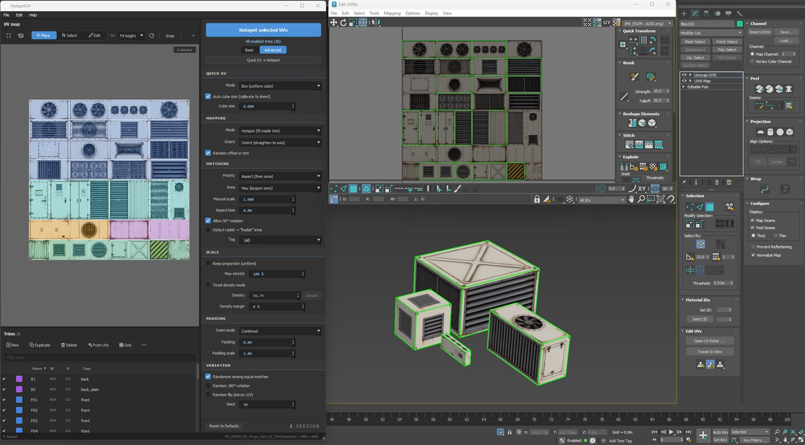

Aspect-aware matching
Every island snaps to the best-fitting trim zone by shape, size and orientation. Deterministic by default — same input, same result, every time.
Plugin for Autodesk 3ds Max
HotspotUV matches every UV island to the best-fitting trim zone by shape, size and orientation — in one click, fully undoable. Lock a consistent texel density across the whole asset and stop fighting your trim sheets.
50% launch discount — ends Aug 11
Why HotspotUV
Trim-sheet and hotspot texturing is fast — when the islands actually line up with the trims. Manually selecting, moving, rotating and scaling UV islands one by one, hundreds of times per asset, turns a simple adjustment into hours of work. HotspotUV does the lining up for you: select your islands, pick target zones on the visual map, and hit one button. The tool picks the right trim for every island, rotates and fits it, and keeps everything as a single undo step.
New in v2.2
No unwrapping first: a uniform box projection at a consistent texel scale, auto-calibrated to your trim sheet, then an immediate hotspot pass — one button, any number of objects.

Key features
Every island snaps to the best-fitting trim zone by shape, size and orientation. Deterministic by default — same input, same result, every time.
Click, Ctrl-click or drag-select target zones directly on the trim map, with a live target count and background-image texture preview.
Scale every island to one consistent texel density computed from its real 3D area. No more mixed resolutions across a panel.
Auto-orient skewed islands to the UV axis before matching, using minimum-area rectangle fitting — even sub-degree corrections.
Keep proportions perfectly uniform, or allow a controlled amount of stretch (0–100%) to fill the zone exactly as much as you want.
Optional random 180° rotation, mirror and pick among equal matches — seeded for repeatable results — to break up visible tiling.
Match zones by real-world size, tag zones into categories, and fine-tune per-zone inset and global padding.
The whole hotspot operation — every island — reverts with a single Ctrl+Z. Experiment freely.
Load .json trim layouts, generate zones from your existing UV islands or from a grid, with a searchable zone list.
The control panel
Great defaults out of the box — but every part is yours to tune. The panel opens in a clean Basic view; one click on Advanced reveals the full toolbox. Here's the whole workflow — panel, toolbars and menus — in plain English.
Progressive disclosure — complexity only when you ask for it.
How each island lands in its trim.
Which trim an island wins.
Nudge and filter the match. (Advanced view)
How big the island gets in the trim.
Keep trims from bleeding into each other. (Advanced view)
Break up visible tiling — repeatably. (Advanced view)
One switch decides what a click on the map does.
Reshape the sheet right on the map.
Every zone can behave differently.
Load, save and reshape trim layouts.
.json layout, or save your sheet.Frequent actions labeled, the rest one click away.
Want the full picture — window anatomy, a trim-sheet building recipe and a live matching simulator?
Open the interactive tutorial →Workflow
Open a .json trim sheet, generate zones from your UV islands, or build them from a grid — with your texture as a background preview.
Add an Unwrap_UVW modifier, switch to Polygon mode and select the faces of the islands you want to map.
Click or drag-select zones on the visual map — or leave the selection empty to target all enabled zones.
Every island snaps to its best-fitting trim, rotated and scaled. Don't like it? One Ctrl+Z and try different settings.
See it in action
Free 6-part course: from a blank plane, through baking and an auto-built trim sheet, to props that UV themselves in one click.
The full series, in order: read the written walkthrough
Free tool · no sign-up, no install
A small in-browser companion to your trim-sheet workflow. Drop an albedo, normal and comp (ORM) map and TileCheck repeats them across an infinite plane under real-time PBR lighting — then measures the edges for you, so seams, value jumps and banding show up here, not in the engine.
Drag & drop your maps — get an answer in seconds.
Built for production
Texture large sets of modular assets with trim sheets and keep every UV layout clean, consistent and repeatable.
Built for large-scale real-time architectural environments, where hundreds of modular assets need fast, consistent UV mapping every day.
Reuse one texture set across a whole environment without manual UV fiddling. Less time spent fixing UVs, more time creating.
“Well done plugin, speeds up development process a lot. I recommend it.”
Pricing
Lifetime license · 1 year of updates included · prices exclude VAT/local taxes, added at checkout · billed in your local currency
Individual
$30$15
For 1 artist. Activate on up to 2 machines (e.g. desktop + laptop).
Get IndividualLaunch offer: 50% off every license — first 100 or until Aug 11 (applied at checkout)
Every license includes: the plugin with a one-click .mzp installer · sample trim layouts · quick-start guide · 1 year of free updates · direct support from the developer
Buying for a company? VAT invoices are provided automatically at checkout. Questions about team licensing: dawidkucharyk@3designdk.com
Recommended — the .mzp installer (in your download):
HotspotUV_*.mzp from your downloadPrefer not to click inside Max? Run the included install.bat, or copy the HotspotUV folder into %PROGRAMDATA%\Autodesk\ApplicationPlugins\ (all users) or %LOCALAPPDATA%\Autodesk\ApplicationPlugins\ (one user, no admin), then restart Max.
FAQ
HotspotUV supports 3ds Max 2022–2027 on Windows 64-bit (developed and tested on 2024 and 2026). It uses Max's bundled Python 3 and PySide, so there is nothing extra to install.
No. HotspotUV works exclusively through the built-in Unwrap_UVW modifier — only your UV coordinates change, never the mesh itself.
Yes — the entire operation, across all mapped islands, is a single undo step. One Ctrl+Z brings everything back.
Layouts are saved as .json (with background image, per-zone inset and world-size data). You can also generate zones straight from your UV islands or from a grid.
By default it's fully deterministic — the same input always gives the same result, and islands round-trip back to their own trims. Randomized variation (rotation, mirroring, pick among equal matches) is opt-in and seeded, so even randomness is repeatable.
It's a lifetime license — the plugin is yours to keep forever — and the price includes one year of updates. After that year the plugin keeps working; you'd only renew if you want newer versions. Three sizes: Individual (1 artist, up to 2 machines), Team (up to 5 machines) and Studio (unlimited activations). Need to move a seat to a new machine? Reach out and I'll free it up.
Release notes
Actively developed — every purchase includes a year of updates like these.
50% launch discount — ends Aug 11